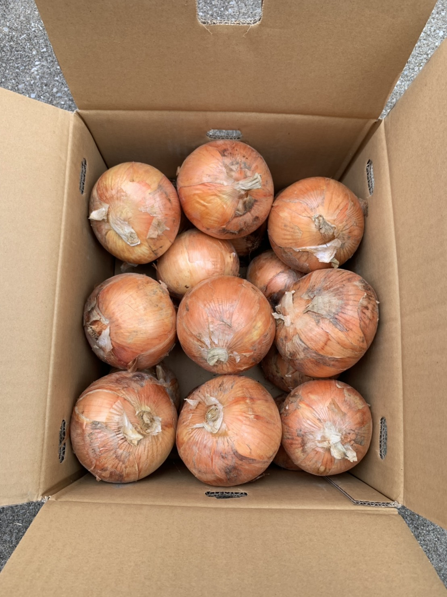

なぜAgrlienに入ったか…３
2020.06.14 鳥山
なぜアグリアンに入ったか
農学国際専攻修士2年
鳥山
【自己紹介】
アグリアンのオーバーエイジ枠、鳥山大地(25歳)と申します。アグリアンに入った動機を説明する前にまずは私の略歴を説明させて下さい。
まず出身は奈良県で、生粋の田舎者です。そこから何とか無事に成長しまして、大学は三重大学の生物資源学部というところに入りました。入学当時は農業への関心など全くなかったのですが、授業や実習を通して農業の現場と関わっていく中で「将来農業に関わりたいな」という価値観をいつの間にか抱くようになりました。
大学卒業後の進路に関しては、周りの友人たちのほとんどが就職していく中で、私が選択したのは「海外農業研修」+「東大大学院」というトリッキーな道です。
時系列で言うと、2017年3月に三重大学卒業→同時期に東京大学大学院の入学手続きを済ませ、即日休学の手続き→同3月末アメリカに渡米→19か月間の農業研修でメキシコ人に混じってひたすら働く→2018年10月に帰国→空白の半年→2019年4月に修士1年生として東京大学大学院に復学、という流れです。
このように色々寄り道をしてきた結果、アグリアンの中ではオーバーエイジ枠となってしまい、ヤングメンバーとはジェネレーションギャップを感じてしまう機会も多々あります。。
【アグリアンに入った動機】
動機は大きく分けて2つあります。
まず1つ目は、シンプルに農作業がしたかったからです。私はアメリカで死ぬほど農作業をやらされた事で、どういうわけか「農作業をしていると心が落ち着く」という体になってしまったようです。ひたすら野菜を収穫し自分がマシーンになったかのような感覚が心地よく、そういった機会を求めていました。
2つ目は、東大生との繋がりが欲しかったからです。私は東大生に対して、テレビでよく見るような天才or変人といったイメージを持っていましたので、本当にそうなのかを検証するためにも是非東大生との繋がりは持ちたいと常々思っておりました。
大学院というのは内部進学してきた学生たちと、外部から来た学生たちの間に溝ができることもあるので漫然と過ごしていると友達が全くできないなんてこともある、という噂を聞いていたので、自分から積極的に繋がりを得るために、いいサークルは無いかなと探している時に、アグリアンいう組織があることを知り、当時のアグリアン部長とお話させてもらった結果、気が合いそうだなと思い、アグリアンに入ることを決意しました。
最後まで読んでくださりありがとうございます。アグリアンで会いましょう！
